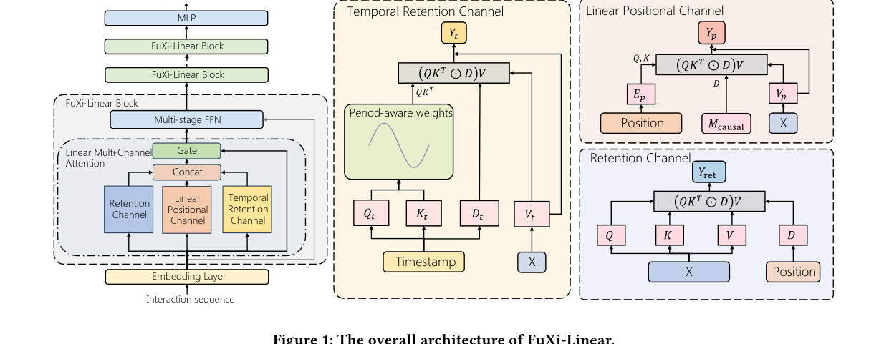

Official PyTorch implementation for "FuXi-Linear: Unleashing the Power of Linear Attention in Long-term Time-aware Sequential Recommendation".
FuXi-Linear brings linear-complexity modeling to long-term time-aware sequential recommendation. It separates semantic, temporal, and positional signals through a FuXi-Linear block with a Temporal Retention Channel and a Linear Positional Channel, enabling long-sequence experiments on KuaiRand-27K, KuaiRec, and MovieLens-20M.
1. Paper
Yufei Ye, Wei Guo, Hao Wang, Luankang Zhang, Heng Chang, Hong Zhu, Yuyang Ye, Yong Liu, Defu Lian, and Enhong Chen. FuXi-Linear: Unleashing the Power of Linear Attention in Long-term Time-aware Sequential Recommendation. arXiv:2602.23671, 2026.
Paper / PDF / Project Page / Code / Citation
The paper argues that conventional attention-based recommenders struggle with thousand-length user sequences because of quadratic cost and coupled temporal/semantic signals. FuXi-Linear introduces temporal retention and linear positional modeling to retain recommendation quality while improving long-sequence efficiency.
2. Highlights
- Uses a Temporal Retention Channel to capture period-aware temporal information without mixing it directly with semantic attention.
- Adds a Linear Positional Channel to restore positional signals under linear attention.
- Supports long time-aware sequential recommendation experiments with public preprocessing scripts.
- Reports efficient long-sequence inference with competitive recommendation quality.
3. Method At A Glance

The FuXi-Linear block combines retention, linear positional, and temporal retention channels before the multi-stage feed-forward network. This design keeps linear complexity while making timestamp and position information explicit.
4. Repository Structure
.
|-- configs/ # Gin configs for KuaiRand-27K, KuaiRec, and MovieLens-20M
|-- generative_recommenders/ # Sequential recommendation model components
|-- preprocess_*.py # Dataset preprocessing scripts
|-- main.py # Main training entry point
|-- requirements.txt # Runtime dependencies
`-- docs/ # Project page and README assets5. Installation
Install PyTorch for your CUDA environment first, then install the remaining dependencies:
pip3 install gin-config absl-py scikit-learn scipy matplotlib numpy apex hypothesis pandas fbgemm_gpu iopath6. Data / Models
Create a local tmp/ directory and download the public datasets:
Expected local layout:
tmp/
|-- kuairand-27k/
`-- kuairec/7. Quick Start
Preprocess public datasets:
python3 preprocess_public_data.py
python3 preprocess_kuairand27k_data.py
python3 preprocess_kuairec_data.pyRun a KuaiRand-27K experiment:
CUDA_VISIBLE_DEVICES=0,1 python3 main.py \
--gin_config_file=configs/kuairand-27k/linear-4b-l1024-b64x2.gin \
--master_port=123458. Reproducing Results / Evaluation
Experiment configurations are organized under:
configs/kuairand-27k/configs/kuairec/configs/ml-20m/
Training logs are written to exps/ by default. You can inspect them with TensorBoard:
tensorboard --logdir ./exps/kuairand-27k-l1024/ --port 24001 --bind_all9. Configuration Notes
The included Gin files cover several model families and sequence-length settings. Start from the dataset-specific linear-*.gin files when reproducing FuXi-Linear, then compare against the HSTU, Mamba, SASRec, TiM4Rec, and TTT configurations included in the same folders.
10. Experimental Highlights
The reported experiments focus on long user histories where efficient attention matters most. FuXi-Linear is designed to preserve the expressive benefits of sequence modeling while reducing prefill and decoding costs in thousand-length recommendation settings.
| Finding | Paper evidence | Takeaway |
|---|---|---|
| Overall accuracy | On Kuairand-27K and KuaiRec, FuXi-Linear reports average relative gains of +9.26% NDCG@10, +7.24% NDCG@50, +9.01% HR@10, +5.11% HR@50, and +8.33% MRR. | The linear design keeps accuracy competitive in long-sequence settings. |
| Temporal channel | On Kuairand-27K, the temporal method reports NDCG@10 0.0609, HR@10 0.1124, and MRR 0.0540 with linear complexity. | Explicit temporal modeling is a main source of the gain. |
| Efficiency | The paper reports up to 10x prefill and 21x decoding speedups; at sequence length 8k, prefill is faster than FuXi-alpha, FuXi-beta, and HSTU. | The method targets deployment cost, not only offline accuracy. |
| Scaling | On Kuairand-27K, NDCG@10 / HR@10 scale from 0.0472 / 0.0881 at 188K parameters to 0.0710 / 0.1288 at 20M parameters. | The architecture preserves useful scaling behavior over larger models. |
11. Notes For Maintainers
- Keep dataset files and training artifacts out of Git history.
- Store future README/project-page figures under
docs/assets/. - When proceedings or presentation links become public, add them to the Paper section and project page.
12. Citation
@misc{ye2026fuxilinear,
title = {FuXi-Linear: Unleashing the Power of Linear Attention in Long-term Time-aware Sequential Recommendation},
author = {Ye, Yufei and Guo, Wei and Wang, Hao and Zhang, Luankang and Chang, Heng and Zhu, Hong and Ye, Yuyang and Liu, Yong and Lian, Defu and Chen, Enhong},
year = {2026},
eprint = {2602.23671},
archivePrefix = {arXiv},
primaryClass = {cs.IR},
url = {https://arxiv.org/abs/2602.23671}
}13. Contact
For paper questions, please contact:
- First author: Yufei Ye (
aboluo2003@mail.ustc.edu.cn) - Corresponding authors: Hao Wang (
wanghao3@ustc.edu.cn) and Enhong Chen (cheneh@ustc.edu.cn)
For repository issues, please open a GitHub issue in this repository.